Lecciones de circuitos eléctricos - Volumen I
Capítulo 10
ANÁLISIS DE RED CC
- What is network analysis?
- Branch current method
- Mesh current method
- Node voltage method
- Introduction to network theorems
- Millman's Theorem
- Superposition Theorem
- Thevenin's Theorem
- Norton's Theorem
- Thevenin-Norton equivalencies
- Millman's Theorem revisited
- Maximum Power Transfer Theorem
- Δ-Y and Y-Δ conversions
- Contributors
- Bibliography
What is network analysis?
En términos generales,análisis de redes cualquier técnica estructurada utilizada para analizar matemáticamente un circuito (una "red" de componentes interconectados). Muy a menudo, el técnico o ingeniero encontrará circuitos que contienen múltiples fuentes de energía o configuraciones de componentes que desafían la simplificación mediante técnicas de análisis en serie/paralelo. En esos casos, se verá obligado a utilizar otros medios. Este capítulo presenta algunas técnicas útiles para analizar circuitos tan complejos.
Para ilustrar cómo incluso un circuito simple puede desafiar el análisis al dividirlo en partes en serie y en paralelo, comience con este circuito en serie-paralelo:
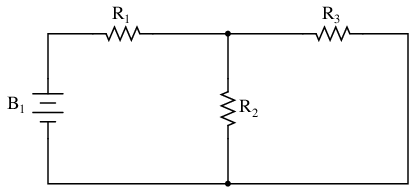
Para analizar el circuito anterior, primero se encontraría el equivalente de R2y r3en paralelo, luego agregue R1en serie para llegar a una resistencia total. Luego, tomando el voltaje de la batería B1con esa resistencia total del circuito, la corriente total podría calcularse mediante el uso de la Ley de Ohm (I = E/R), luego esa cifra actual se usaría para calcular las caídas de voltaje en el circuito. En definitiva, un procedimiento bastante sencillo.
Sin embargo, agregar sólo una batería más podría cambiar todo eso:
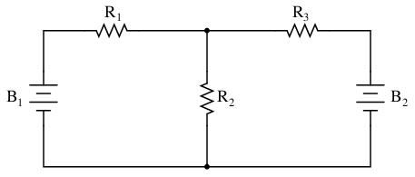
Resistencias R2y r3ya no están en paralelo entre sí, porque B2se ha insertado en R3Rama del circuito. Tras una inspección más cercana, parece que haynodos resistencias en este circuito directamente en serie o en paralelo entre sí. Este es el quid de nuestro problema: en el análisis serie-paralelo, comenzamos identificando conjuntos de resistencias queerandirectamente en serie o en paralelo entre sí, reduciéndolas a resistencias simples equivalentes. Si no hay resistencias en una configuración simple en serie o en paralelo entre sí, ¿qué podemos hacer?
Debe quedar claro que este circuito aparentemente simple, con sólo tres resistencias, es imposible de reducir a una combinación de secciones simples en serie y simples secciones en paralelo: es algo completamente diferente. Sin embargo, este no es el único tipo de circuito que desafía el análisis en serie/paralelo:
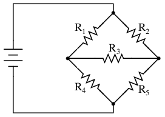
Aquí tenemos un circuito puente y, a modo de ejemplo, supondremos que esnotequilibrado (relación R1/R4no igual a la relación R2/R5). Si estuviera equilibrado, no pasaría corriente por R3, y podría abordarse como un circuito combinado en serie/paralelo (R1--R4// R2--R5). Sin embargo, cualquier corriente a través de R3hace imposible un análisis en serie/paralelo. R1no está en serie con R4porque hay otro camino para que los electrones fluyan a través de R3. R tampoco2en serie con R5por la misma razón. Asimismo, R.1no es paralelo a R2porque R3está separando sus pistas inferiores. R tampoco4en paralelo con R5. ¡Aaarrggghhhh!
Aunque puede que no sea evidente en este momento, el meollo del problema es la existencia de múltiples cantidades desconocidas. Al menos en un circuito combinado en serie/paralelo, había una manera de encontrar la resistencia total y el voltaje total, dejando la corriente total como un único valor desconocido para calcular (y luego esa corriente se usaba para satisfacer variables previamente desconocidas en el proceso de reducción hasta que se pudiera analizar todo el circuito). Con estos problemas, se desconoce más de un parámetro (variable) en el nivel más básico de simplificación de circuitos.
Con el circuito de dos baterías, no hay manera de llegar a un valor de “resistencia total”, porque haytwofuentes de energía para proporcionar voltaje y corriente (necesitaríamostworesistencias “totales” para proceder con cualquier cálculo de la Ley de Ohm). Con el circuito de puente desequilibrado, existe algo llamado resistencia total a través de una batería (allanando el camino para un cálculo de la corriente total), pero esa corriente total se divide inmediatamente en proporciones desconocidas en cada extremo del puente, por lo que no se pueden realizar más cálculos de la Ley de Ohm para el voltaje (E=IR).
Entonces, ¿qué podemos hacer cuando nos enfrentamos a múltiples incógnitas en un circuito? La respuesta se encuentra inicialmente en un proceso matemático conocido comoecuaciones simultáneas or sistemas de ecuaciones, mediante el cual se resuelven múltiples variables desconocidas relacionándolas entre sí en múltiples ecuaciones. En un escenario con una sola incógnita (como todas las ecuaciones de la ley de Ohm que hemos analizado hasta ahora), solo es necesario que haya una única ecuación para resolver la única incógnita:
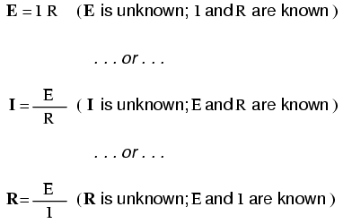
Sin embargo, cuando estamos resolviendo múltiples valores desconocidos, necesitamos tener la misma cantidad de ecuaciones que incógnitas para poder llegar a una solución. Existen varios métodos para resolver ecuaciones simultáneas, todos bastante intimidantes y demasiado complejos para explicarlos en este capítulo. Sin embargo, muchas calculadoras científicas y programables pueden resolver incógnitas simultáneas, por lo que se recomienda utilizar una calculadora de este tipo cuando se aprende por primera vez a analizar estos circuitos.
Esto no da tanto miedo como parece al principio. ¡Confía en mí!
Más adelante veremos que algunas personas inteligentes han encontrado trucos para evitar tener que utilizar ecuaciones simultáneas en este tipo de circuitos. A estos trucos los llamamosteoremas de red, y exploraremos algunos más adelante en este capítulo.
- REVISAR:
- Algunas configuraciones de circuitos (“redes”) no se pueden resolver mediante reducción de acuerdo con las reglas de circuitos en serie/paralelo, debido a múltiples valores desconocidos.
- Las técnicas matemáticas para resolver múltiples incógnitas (llamadas “ecuaciones simultáneas” o “sistemas”) se pueden aplicar a leyes básicas de circuitos para resolver redes.
Branch current method
La primera y más sencilla técnica de análisis de redes se llamaMétodo de corriente de rama. En este método, asumimos direcciones de las corrientes en una red y luego escribimos ecuaciones que describen sus relaciones entre sí mediante las leyes de Kirchhoff y Ohm. Una vez que tenemos una ecuación para cada corriente desconocida, podemos resolver las ecuaciones simultáneas y determinar todas las corrientes y, por lo tanto, todas las caídas de voltaje en la red.
Usemos este circuito para ilustrar el método:
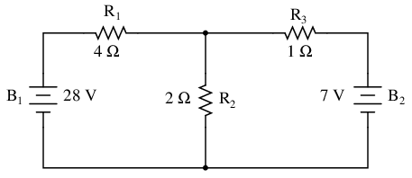
El primer paso es elegir un nodo (unión de cables) en el circuito para usarlo como punto de referencia para nuestras corrientes desconocidas. Elegiré el nodo que se une a la derecha de R.1, la parte superior de R2, y la izquierda de R3.
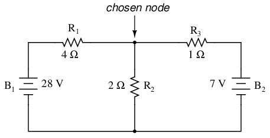
En este nodo, adivina qué direcciones toman las corrientes de los tres cables, etiquetándolas como1, I2y yo3, respectivamente. Tenga en cuenta que estas direcciones de la corriente son especulativas en este momento. Afortunadamente, si resulta que alguna de nuestras conjeturas estaba equivocada, lo sabremos cuando resolvamos matemáticamente las corrientes (cualquier dirección de corriente "incorrecta" aparecerá como números negativos en nuestra solución).
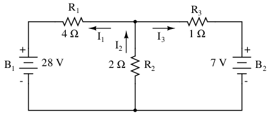
La Ley de Corrientes de Kirchhoff (KCL) nos dice que la suma algebraica de las corrientes que entran y salen de un nodo debe ser igual a cero, por lo que podemos relacionar estas tres corrientes (I1, I2y yo3) entre sí en una sola ecuación. Por el bien de la convención, denotaré cualquier corrienteentrandoel nodo tiene signo positivo y cualquier corrientesaliendoel nodo con signo negativo:
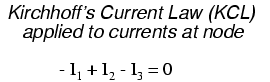
El siguiente paso es etiquetar todas las polaridades de caída de voltaje a través de las resistencias de acuerdo con las direcciones supuestas de las corrientes. Recuerde que el extremo “aguas arriba” de una resistencia siempre será negativo, y el extremo “aguas abajo” de una resistencia positivo entre sí, ya que los electrones están cargados negativamente:
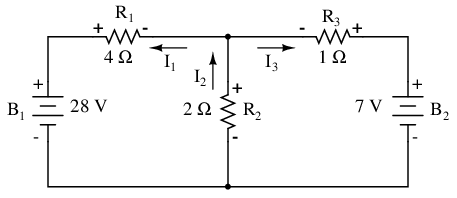
Las polaridades de la batería, por supuesto, permanecen como estaban según su simbología (extremo corto negativo, extremo largo positivo). Está bien si la polaridad de la caída de voltaje de una resistencia no coincide con la polaridad de la batería más cercana, siempre y cuando la polaridad del voltaje de la resistencia se base correctamente en la dirección supuesta de la corriente que la atraviesa. En algunos casos podemos descubrir que la corriente será forzada.hacia atrása través de una batería, provocando este mismo efecto. Lo importante que debe recordar aquí es basar todas las polaridades de sus resistencias y los cálculos posteriores en las direcciones de las corrientes asumidas inicialmente. Como se indicó anteriormente, si su suposición resulta ser incorrecta, será evidente una vez que se hayan resuelto las ecuaciones (mediante una solución negativa). Sin embargo, la magnitud de la solución seguirá siendo correcta.
La Ley de Voltaje de Kirchhoff (KVL) nos dice que la suma algebraica de todos los voltajes en un bucle debe ser igual a cero, por lo que podemos crear más ecuaciones con términos de corriente (I1, I2y yo3) para nuestras ecuaciones simultáneas. Para obtener una ecuación KVL, debemos contar las caídas de voltaje en un bucle del circuito, como si estuviéramos midiendo con un voltímetro real. Elegiré trazar primero el bucle izquierdo de este circuito, comenzando desde la esquina superior izquierda y moviéndome en sentido antihorario (la elección de los puntos de inicio y las direcciones es arbitraria). El resultado se verá así:
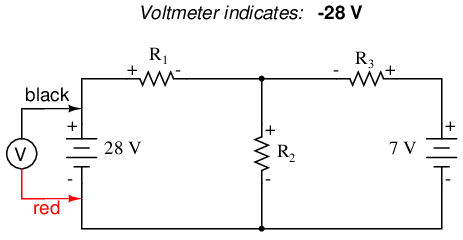
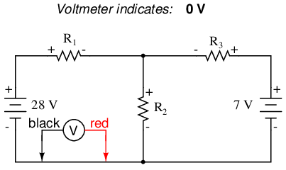
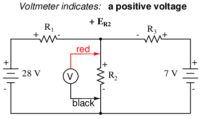
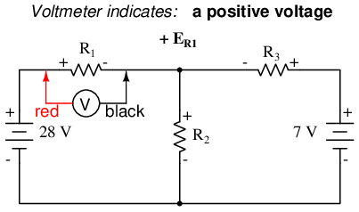
Habiendo completado nuestro trazado del bucle izquierdo, sumamos estas indicaciones de voltaje para obtener una suma de cero:
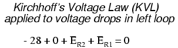
Por supuesto, todavía no sabemos cuál es el voltaje en R1o R2, por lo que no podemos insertar esos valores en la ecuación como cifras numéricas en este momento. Sin embargo, nosotrosdoSabemos que los tres voltajes deben sumar algebraicamente cero, por lo que la ecuación es verdadera. Podemos ir un paso más allá y expresar los voltajes desconocidos como el producto de las correspondientes corrientes desconocidas (I1y yo2) y sus respectivas resistencias, siguiendo la Ley de Ohm (E=IR), así como eliminar el término 0:
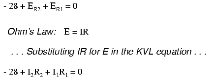
Como sabemos cuáles son los valores de todas las resistencias en ohmios, podemos sustituir esas cifras en la ecuación para simplificar un poco las cosas:
Quizás se pregunte por qué nos tomamos la molestia de manipular esta ecuación desde su forma inicial (-28 + ER2 + ER1). Después de todo, los dos últimos términos aún se desconocen, entonces, ¿qué ventaja hay en expresarlos en términos de voltajes desconocidos o como corrientes desconocidas (multiplicadas por resistencias)? El propósito al hacer esto es expresar la ecuación KVL usando lamismas variables desconocidascomo la ecuación KCL, ya que este es un requisito necesario para cualquier método de solución de ecuaciones simultáneas. Para resolver tres corrientes desconocidas (I1, I2y yo3), debemos tener tres ecuaciones que relacionen estos trescorrientes(novoltajes!) juntos.
Aplicando los mismos pasos al bucle derecho del circuito (comenzando en el nodo elegido y moviéndose en sentido antihorario), obtenemos otra ecuación KVL:
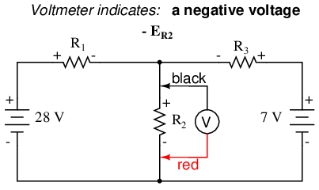
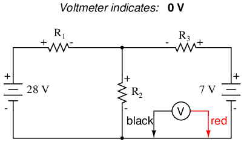
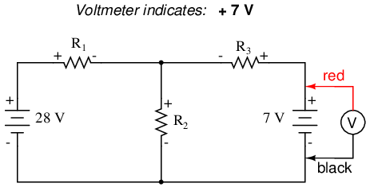
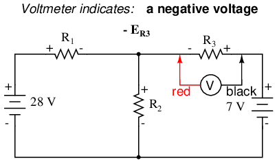
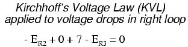
Sabiendo ahora que el voltaje a través de cada resistencia puede ser ydebería serexpresada como el producto de la corriente correspondiente y la resistencia (conocida) de cada resistencia, podemos reescribir la ecuación como tal:
Ahora tenemos un sistema matemático de tres ecuaciones (una ecuación KCL y dos ecuaciones KVL) y tres incógnitas:
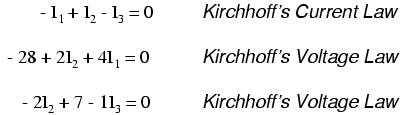
Para algunos métodos de solución (especialmente cualquier método que involucre una calculadora), es útil expresar cada término desconocido en cada ecuación, con cualquier valor constante a la derecha del signo igual y con cualquier término "unidad" expresado con un coeficiente explícito de 1. Reescribiendo las ecuaciones nuevamente, tenemos:
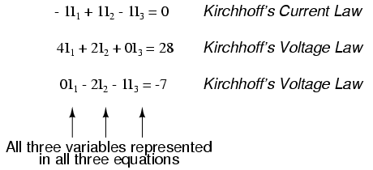
Utilizando cualquier técnica de solución que tengamos a nuestra disposición, deberíamos llegar a una solución para los tres valores actuales desconocidos:
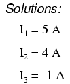
entonces yo1es de 5 amperios, yo2es de 4 amperios, y yo3es un amperio negativo. Pero ¿qué significa corriente “negativa”? En este caso, significa que nuestroficticiodirección para yo3era opuesto a surealdirección. Volviendo a nuestro circuito original, podemos volver a dibujar la flecha actual para I3(y volver a dibujar la polaridad de R3caída de voltaje para que coincida):
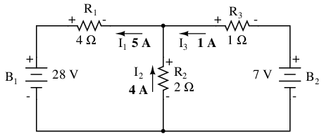
¡Observe cómo la corriente está siendo empujada hacia atrás a través de la batería 2 (los electrones fluyen hacia arriba) debido al voltaje más alto de la batería 1 (cuya corriente apunta hacia abajo como lo haría normalmente)! A pesar de que la batería B2La polaridad está tratando de empujar los electrones hacia abajo en esa rama del circuito, los electrones están siendo obligados a retroceder a través de él debido al voltaje superior de la batería B.1. ¿Significa esto que la batería más fuerte siempre "ganará" y la batería más débil siempre recibirá corriente forzada hacia atrás? ¡No! En realidad, depende de los voltajes relativos de ambas baterías.andlos valores de resistencia en el circuito. La única forma segura de determinar qué está pasando es tomarse el tiempo para analizar matemáticamente la red.
Ahora que conocemos la magnitud de todas las corrientes en este circuito, podemos calcular las caídas de voltaje en todas las resistencias con la Ley de Ohm (E=IR):
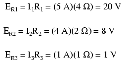
Analicemos ahora esta red usando SPICE para verificar nuestras cifras de voltaje.[spi]También podríamos analizar la corriente con SPICE, pero como eso requiere la inserción de componentes adicionales en el circuito, y porque sabemos que si los voltajes son todos iguales y todas las resistencias son iguales, las corrientesdebeSi todos son iguales, optaré por el análisis menos complejo. Aquí hay un nuevo dibujo de nuestro circuito, completo con números de nodo para que SPICE haga referencia:
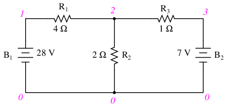
network analysis example v1 1 0 v2 3 0 dc 7 r1 1 2 4 r2 2 0 2 r3 2 3 1 .dc v1 28 28 1 .print dc v(1,2) v(2,0) v(2,3) .end
v1 v(1,2) v(2) v(2,3) 2.800E+01 2.000E+01 8.000E+00 1.000E+00
Efectivamente, todas las cifras de voltaje resultan ser las mismas: 20 voltios en R1(nodos 1 y 2), 8 voltios en R2(nodos 2 y 0) y 1 voltio en R3(nodos 2 y 3). Toma nota de los signos de todas estas cifras de voltaje: ¡todos son valores positivos! SPICE basa sus polaridades en el orden en que se enumeran los nodos, siendo el primer nodo positivo y el segundo negativo. Por ejemplo, una cifra de 20 voltios positivos (+) entre los nodos 1 y 2 significa que el nodo 1 es positivo con respecto al nodo 2. Si la cifra hubiera resultado negativa en el análisis SPICE, habríamos sabido que nuestra polaridad real era "al revés" (nodo 1 negativo con respecto al nodo 2). Al verificar los pedidos de los nodos en el listado de SPICE, podemos ver que todas las polaridades coinciden con lo que determinamos mediante el método de análisis Branch Current.
- REVISAR:
- Pasos a seguir para el método de análisis “Corriente de Rama”:
- (1) Elija un nodo y asuma direcciones de corrientes.
- (2) Escriba una ecuación KCL que relacione las corrientes en el nodo.
- (3) Etiquete las polaridades de caída de voltaje de la resistencia según las corrientes supuestas.
- (4) Escriba ecuaciones KVL para cada bucle del circuito, sustituyendo el producto IR por E en cada término de resistencia de las ecuaciones.
- (5) Resuelva las corrientes derivadas desconocidas (ecuaciones simultáneas).
- (6) Si alguna solución es negativa, entonces la dirección supuesta de la corriente para esa solución es incorrecta.
- (7) Resuelva las caídas de voltaje en todas las resistencias (E=IR).
Mesh current method
The Método de corriente de malla, también conocido como elMétodo de corriente de bucle, es bastante similar al método de corriente de rama en que utiliza ecuaciones simultáneas, la ley de voltaje de Kirchhoff y la ley de Ohm para determinar corrientes desconocidas en una red. Se diferencia del método de corriente de rama en que nonotuse la ley actual de Kirchhoff y, por lo general, podrá resolver un circuito con menos variables desconocidas y menos ecuaciones simultáneas, lo cual es especialmente bueno si se ve obligado a resolver sin una calculadora.
Mesh Current, conventional method
Veamos cómo funciona este método en el mismo problema de ejemplo:
El primer paso en el método de corriente de malla es identificar "bucles" dentro del circuito que abarca todos los componentes. En nuestro circuito de ejemplo, el bucle formado por B1, R1y R2será el primero mientras el bucle formado por B2, R2y R3será el segundo. La parte más extraña del método Mesh Current es visualizar corrientes circulantes en cada uno de los bucles. De hecho, este método recibe su nombre de la idea de que estas corrientes se engranan entre bucles como conjuntos de engranajes giratorios:
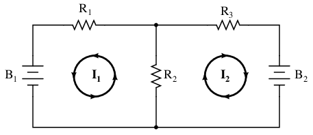
La elección de la dirección de cada corriente es completamente arbitraria, al igual que en el método de corriente de rama, pero las ecuaciones resultantes son más fáciles de resolver si las corrientes van en la misma dirección a través de componentes que se cruzan (obsérvese cómo las corrientes I1y yo2ambos están subiendo a través de la resistencia R2, donde se “engranan” o se cruzan). Si la dirección supuesta de una corriente de malla es incorrecta, la respuesta para esa corriente tendrá un valor negativo.
El siguiente paso es etiquetar todas las polaridades de caída de voltaje a través de las resistencias de acuerdo con las direcciones supuestas de las corrientes de malla. Recuerde que el extremo "aguas arriba" de una resistencia siempre será negativo, y el extremo "aguas abajo" de una resistencia positivo entre sí, ya que los electrones están cargados negativamente. Las polaridades de la batería, por supuesto, están dictadas por las orientaciones de sus símbolos en el diagrama, y pueden "concordar" o no con las polaridades de la resistencia (direcciones de corriente asumidas):
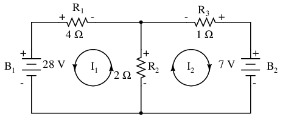
Usando la ley de voltaje de Kirchhoff, ahora podemos recorrer cada uno de estos bucles, generando ecuaciones representativas de las caídas de voltaje y polaridades de los componentes. Al igual que con el método de corriente de rama, denotaremos la caída de voltaje de una resistencia como el producto de la resistencia (en ohmios) y su respectiva corriente de malla (esa cantidad se desconoce en este momento). Cuando dos corrientes se entrelazan, escribiremos ese término en la ecuación siendo la corriente de resistencia lasumde las dos corrientes engranadas.
Siguiendo el bucle izquierdo del circuito, comenzando desde la esquina superior izquierda y moviéndose en el sentido contrario a las agujas del reloj (la elección de los puntos de inicio y las direcciones es, en última instancia, irrelevante), contando la polaridad como si tuviéramos un voltímetro en la mano, el cable rojo en el punto de adelante y el cable negro en el punto de atrás, obtenemos esta ecuación:
Observe que el término medio de la ecuación usa la suma de las corrientes de malla I1y yo2como la corriente a través de la resistencia R2. Esto se debe a que las corrientes de malla I1y yo2van en la misma dirección a través de R2y así complementarse entre sí. Distribuyendo el coeficiente de 2 al I1y yo2términos, y luego combinando I1términos de la ecuación, podemos simplificarlos como tales:
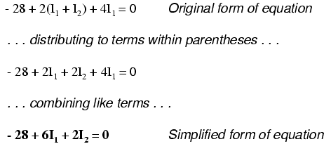
En este momento tenemos una ecuación con dos incógnitas. Para poder resolver dos corrientes de malla desconocidas, debemos tener dos ecuaciones. Si trazamos el otro bucle del circuito, podemos obtener otra ecuación KVL y tener suficientes datos para resolver las dos corrientes. Como soy una criatura de hábitos, comenzaré en la esquina superior izquierda del bucle derecho y trazaré en el sentido contrario a las agujas del reloj:
Simplificando la ecuación como antes, terminamos con:
Ahora, con dos ecuaciones, podemos usar uno de varios métodos para resolver matemáticamente las corrientes desconocidas I1y yo2:
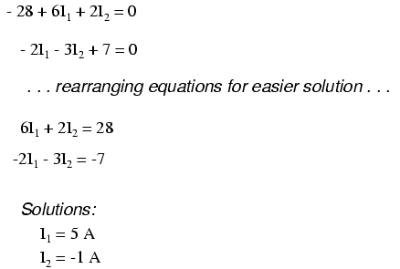
Sabiendo que estas soluciones son valores paramallacorrientes, noramacorrientes, debemos volver a nuestro diagrama para ver cómo encajan para dar corrientes a través de todos los componentes:
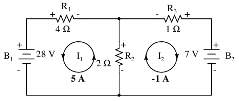
La solución de -1 amperio para I2significa que nuestra dirección de corriente inicialmente asumida era incorrecta. En realidad, yo2fluye en sentido antihorario a un valor de 1 amperio (positivo):
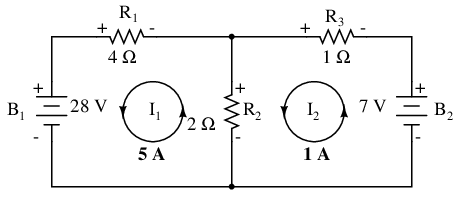
Este cambio de dirección de la corriente con respecto a lo que se supuso inicialmente alterará la polaridad de las caídas de voltaje a través de R2y r3debido a la corriente yo2. Desde aquí, podemos decir que la corriente a través de R1es de 5 amperios, con la caída de voltaje en R1siendo el producto de corriente y resistencia (E=IR), 20 voltios (positivo a la izquierda y negativo a la derecha). Además, podemos decir con seguridad que la corriente que pasa por R3es de 1 amperio, con una caída de voltaje de 1 voltio (E=IR), positivo a la izquierda y negativo a la derecha. Pero ¿qué está pasando en R?2?
Corriente de malla I1va "hacia arriba" a través de R2, mientras que la corriente de malla I2va "hacia abajo" a través de R2. Para determinar la corriente real a través de R2, debemos ver cómo las corrientes de malla I1y yo2interactúan (en este caso están en oposición) y los suman algebraicamente para llegar a un valor final. desde que yo1está subiendo a 5 amperios, y yo2está “bajando” a 1 amperio, elrealcorriente a través de R2debe ser un valor de 4 amperios, subiendo:
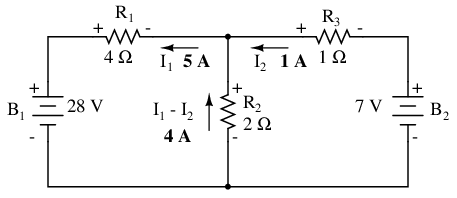
Una corriente de 4 amperios a través de R.2La resistencia de 2 Ω nos da una caída de voltaje de 8 voltios (E=IR), positivo arriba y negativo abajo.
La principal ventaja del análisis de corriente de malla es que generalmente permite la solución de una red grande con menos valores desconocidos y menos ecuaciones simultáneas. Nuestro problema de ejemplo tomó tres ecuaciones para resolver el método de Corriente de Rama y solo dos ecuaciones usando el método de Corriente de Malla. Esta ventaja es mucho mayor a medida que las redes aumentan en complejidad:
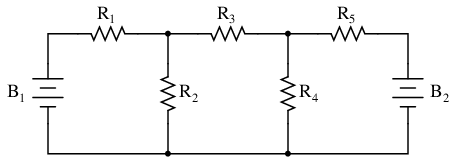
Para resolver esta red usando corrientes de rama, tendríamos que establecer cinco variables para tener en cuenta todas y cada una de las corrientes únicas en el circuito (I1a través de yo5). Esto requeriría cinco ecuaciones para la solución, en forma de dos ecuaciones KCL y tres ecuaciones KVL (dos ecuaciones para KCL en los nodos y tres ecuaciones para KVL en cada bucle):
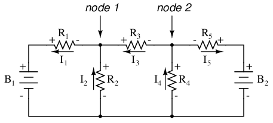
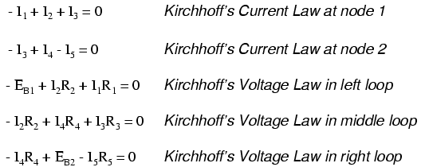
Supongo que si no tienes nada mejor que hacer con tu tiempo que resolver cinco variables desconocidas con cinco ecuaciones, quizás no te importe usar el método de análisis de corriente de rama para este circuito. Para aquellos de nosotros quetenermejores cosas que hacer con nuestro tiempo, el método de la corriente de malla es mucho más fácil y requiere solo tres incógnitas y tres ecuaciones para resolver:
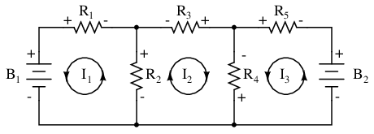
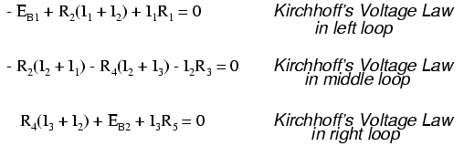
Tener menos ecuaciones con las que trabajar es una clara ventaja, especialmente cuando se realiza la solución simultánea de ecuaciones a mano (sin calculadora).
Otro tipo de circuito que se adapta bien a la corriente de malla es el puente de Wheatstone desequilibrado. Tome este circuito, por ejemplo:
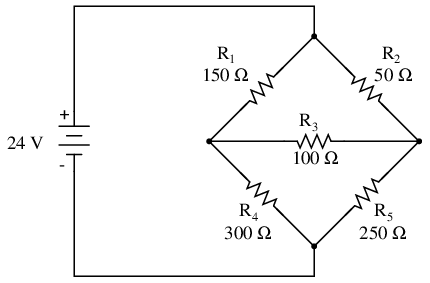
Dado que las razones de R1/R4y r2/R5son desiguales, sabemos que habrá voltaje a través de la resistencia R3, y cierta cantidad de corriente a través de él. Como se analizó al principio de este capítulo, este tipo de circuito es irreducible mediante un análisis serie-paralelo normal y sólo puede analizarse mediante algún otro método.
Podríamos aplicar el método de corriente de rama a este circuito, pero requeriríasixcorrientes (yo1a través de yo6), lo que lleva a un conjunto muy grande de ecuaciones simultáneas para resolver. Sin embargo, utilizando el método de la corriente de malla, podemos resolver todas las corrientes y voltajes con muchas menos variables.
El primer paso en el método de corriente de malla es extraer suficientes corrientes de malla para dar cuenta de todos los componentes del circuito. Mirando nuestro circuito puente, debería ser obvio dónde colocar dos de estas corrientes:
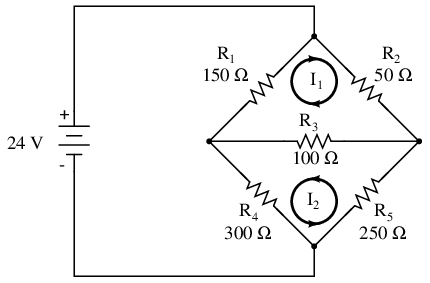
La dirección de estas corrientes de malla, por supuesto, es arbitraria. Sin embargo, dos corrientes de malla no son suficientes en este circuito, porque ni yo1ni yo2pasa por la bateria. Entonces, debemos agregar una tercera corriente de malla, I3:
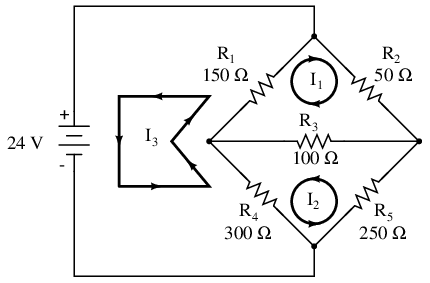
Aquí he elegido yo3para hacer un bucle desde el lado inferior de la batería, a través de R4, a través de R1y de regreso a la parte superior de la batería. Este no es el único camino que podría haber elegido para mí.3, pero parece lo más sencillo.
Ahora, debemos etiquetar las polaridades de caída de voltaje de la resistencia, siguiendo cada una de las direcciones de las corrientes asumidas:
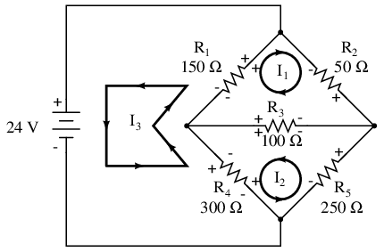
Note algo muy importante aquí: en la resistencia R4, las polaridades de las respectivas corrientes de malla no coinciden. Esto se debe a que esas corrientes de malla (yo2y yo3) están pasando por R4en diferentes direcciones. Esto no impide el uso del método de análisis Mesh Current, pero lo complica un poco. Aunque más adelante mostraremos cómo evitar la R.4choque actual. (Ver ejemplo a continuación)
Generando una ecuación KVL para el bucle superior del puente, comenzando desde el nodo superior y siguiendo en el sentido de las agujas del reloj:
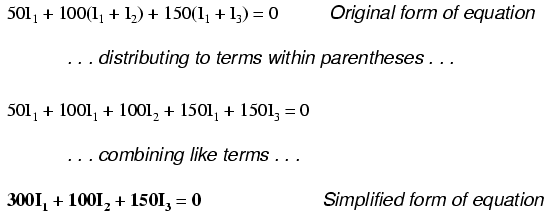
En esta ecuación, representamos las direcciones comunes de las corrientes por susumasa través de resistencias comunes. Por ejemplo, la resistencia R3, con un valor de 100 Ω, tiene su caída de voltaje representada en la ecuación KVL anterior mediante la expresión 100(I1 + I2), ya que ambas corrientes I1y yo2pasar por R3de derecha a izquierda. Lo mismo puede decirse de la resistencia R1, con su expresión de caída de voltaje mostrada como 150(I1 + I3), ya que tanto yo1y yo3ir de abajo hacia arriba a través de esa resistencia, y así trabajarjuntospara generar su caída de voltaje.
Generar una ecuación KVL para el bucle inferior del puente no será tan fácil, ya que tenemos dos corrientes que van una contra la otra a través de la resistencia R.4. Así es como lo hago (comenzando en el nodo de la derecha y siguiendo en sentido antihorario):
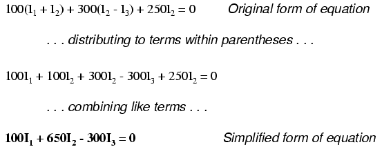
Observe cómo el segundo término en la forma original de la ecuación tiene una resistencia R4El valor de 300 Ω multiplicado por eldiferenciaentre yo2y yo3 (I2 - I3). Así es como representamos el efecto combinado de dos corrientes de malla que van en direcciones opuestas a través del mismo componente. Aquí es muy importante elegir los signos matemáticos apropiados: 300(I2 - I3) no significa lo mismo que 300(yo3 - I2). Elegí escribir 300(yo2 - I3) porque estaba pensando primero en mí2El efecto de (creando una caída de voltaje positiva, midiendo con un voltímetro imaginario a través de R4, mina roja en la parte inferior y mina negra en la parte superior), y secundariamente de I3El efecto de (creando una caída de voltaje negativa, cable rojo en la parte inferior y cable negro en la parte superior). Si hubiera pensado en términos de yo3El efecto primero y yo.2En segundo lugar, manteniendo los cables de mi voltímetro imaginario en las mismas posiciones (rojo abajo y negro arriba), la expresión habría sido -300(I3 - I2). Tenga en cuenta que esta expresiónismatemáticamente equivalente al primero: +300(I2 - I3).
Bueno, eso se ocupa de dos ecuaciones, pero todavía necesito una tercera ecuación para completar mi conjunto de ecuaciones simultáneas de tres variables, tres ecuaciones. Esta tercera ecuación también debe incluir el voltaje de la batería, que hasta este momento no aparece en ninguna de las dos ecuaciones KVL anteriores. Para generar esta ecuación, trazaré un bucle nuevamente con mi voltímetro imaginario comenzando desde el terminal inferior (negativo) de la batería, avanzando en el sentido de las agujas del reloj (nuevamente, la dirección en la que paso es arbitraria y no necesita ser la misma que la dirección de la corriente de malla en ese bucle):
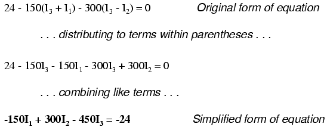
resolviendo para yo1, I2y yo3usando cualquier método de ecuación simultánea que prefiramos:
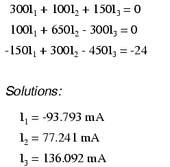
Ejemplo:
Usa Octave para encontrar la solución para I1, I2y yo3de la forma simplificada de ecuaciones anterior.[octav]
Solución:
En Octave, un clon de Matlab® de código abierto, ingrese los coeficientes en la matriz A entre corchetes con los elementos de la columna separados por comas y las filas separadas por punto y coma.[octav]Ingrese los voltajes en el vector de columna: b. Las corrientes desconocidas: yo1, I2y yo3se calculan mediante el comando: x=A\b. Estos están contenidos dentro del vector de columna x.
octave:1>A = [300,100,150;100,650,-300;-150,300,-450] A = 300 100 150 100 650 -300 -150 300 -450 octave:2> b = [0;0;-24] b = 0 0 -24 octave:3> x = A\b x = -0.093793 0.077241 0.136092
El valor negativo obtenido para I1nos dice que la dirección supuesta para esa corriente de malla era incorrecta. Por lo tanto, los valores de corriente reales a través de cada resistencia son los siguientes:
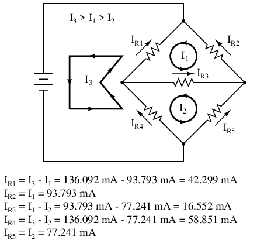
Calcular las caídas de voltaje en cada resistencia:
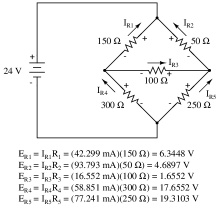
Una simulación SPICE confirma la precisión de nuestros cálculos de voltaje:[spi]
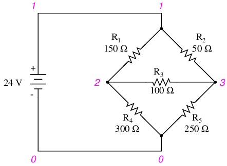
unbalanced wheatstone bridge v1 1 0 r1 1 2 150 r2 1 3 50 r3 2 3 100 r4 2 0 300 r5 3 0 250 .dc v1 24 24 1 .print dc v(1,2) v(1,3) v(3,2) v(2,0) v(3,0) .end
v1 v(1,2) v(1,3) v(3,2) v(2) v(3) 2.400E+01 6.345E+00 4.690E+00 1.655E+00 1.766E+01 1.931E+01
Ejemplo:
(a) Encuentre una nueva ruta para la corriente I3que no produce una polaridad conflictiva en ninguna resistencia en comparación con I1o yo2. R4fue el componente ofensivo. (b) Encuentre valores para I1, I2y yo3. (c) Encuentre las cinco corrientes de resistencia y compárelas con los valores anteriores.
Solución:[dvn]
(a) Ruta I3a través de R5, R3y r1como se muestra:
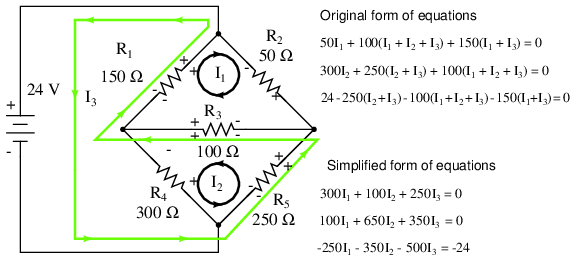
Tenga en cuenta que la polaridad conflictiva en R4ha sido eliminado. Además, ninguna de las otras resistencias tiene polaridades en conflicto.
(b) Octave, un clon de Matlab de código abierto (gratuito), genera un vector de corriente de malla en “x”:[octav]
octave:1> A = [300,100,250;100,650,350;-250,-350,-500]
A =
300 100 250
100 650 350
-250 -350 -500
octave:2> b = [0;0;-24]
b =
0
0
-24
octave:3> x = A\b
x =
-0.093793
-0.058851
0.136092
No todas las corrientes yo1, I2y yo3son iguales (yo2) como el puente anterior debido a diferentes rutas de bucle Sin embargo, las corrientes de resistencia se comparan con los valores anteriores:
IR1 = I1 + I3 = -93.793 ma + 136.092 ma = 42.299 ma IR2 = I1 = -93.793 ma IR3 = I1 + I2 + I3 = -93.793 ma -58.851 ma + 136.092 ma = -16.552 ma IR4 = I2 = -58.851 ma IR5 = I2 + I3 = -58.851 ma + 136.092 ma = 77.241 ma
Dado que las corrientes de las resistencias son las mismas que los valores anteriores, los voltajes de las resistencias serán idénticos y no será necesario calcularlos nuevamente.
- REVISAR:
- Pasos a seguir para el método de análisis “Corriente de Malla”:
- (1) Dibujar corrientes de malla en los bucles del circuito, suficientes para tener en cuenta todos los componentes.
- (2) Etiquete las polaridades de caída de voltaje de la resistencia según las direcciones supuestas de las corrientes de malla.
- (3) Escriba ecuaciones KVL para cada bucle del circuito, sustituyendo el producto IR por E en cada término de resistencia de la ecuación. Cuando dos corrientes de malla se cruzan a través de un componente, exprese la corriente como la suma algebraica de esas dos corrientes de malla (es decir, I1 + I2) si las corrientes van en la misma dirección a través de ese componente. Si no, exprese la corriente como la diferencia (es decir, I1 - I2).
- (4) Resuelva las corrientes de malla desconocidas (ecuaciones simultáneas).
- (5) Si alguna solución es negativa, entonces la dirección actual supuesta es incorrecta.
- (6) Agregue algebraicamente corrientes de malla para encontrar corrientes en componentes que comparten múltiples corrientes de malla.
- (7) Resuelva las caídas de voltaje en todas las resistencias (E=IR).
Mesh current by inspection
Echamos un segundo vistazo al “método de corriente de malla” con todas las corrientes funcionando en sentido antihorario (ccw). La motivación es simplificar la escritura de ecuaciones de malla ignorando la polaridad de la caída de voltaje de la resistencia. Sin embargo, debemos prestar atención a la polaridad de las fuentes de voltaje con respecto a la dirección de corriente supuesta. El signo de las caídas de voltaje de la resistencia seguirá un patrón fijo.
Si escribimos un conjunto de ecuaciones de corriente de malla convencionales para el siguiente circuito, donde prestamos atención a los signos de la caída de voltaje a través de las resistencias, podemos reorganizar los coeficientes en un patrón fijo:
Una vez reordenadas, podemos escribir ecuaciones mediante inspección. Los signos de los coeficientes siguen un patrón fijo en el par anterior, o en el conjunto de tres en las reglas siguientes.
- Reglas actuales de malla:
- Este método supone fuentes de voltaje de flujo de electrones (no flujo de corriente convencional). Reemplace cualquier fuente de corriente en paralelo con una resistencia con una fuente de voltaje equivalente en serie con una resistencia equivalente.
- Ignorando la dirección de la corriente o la polaridad del voltaje en las resistencias, dibuje bucles de corriente en sentido antihorario que atraviesen todos los componentes. Evite los bucles anidados.
- Escriba ecuaciones de la ley de voltaje en términos de corrientes desconocidas: I1, I2y yo3. La ecuación 1, el coeficiente 1, la ecuación 2, el coeficiente 2 y la ecuación 3, el coeficiente 3 son las sumas positivas de las resistencias alrededor de los respectivos bucles.
- Todos los demás coeficientes son negativos y representan la resistencia común a un par de bucles. La ecuación 1, el coeficiente 2 es la resistencia común a los bucles 1 y 2, el coeficiente 3 es la resistencia común a los bucles 1 y 3. Repita para otras ecuaciones y coeficientes.
+(sum of R's loop 1)I1 - (common R loop 1-2)I2 - (common R loop 1-3)I3 = E1 -(common R loop 1-2)I1 + (sum of R's loop 2)I2 - (common R loop 2-3)I3 = E2 -(common R loop 1-3)I1 - (common R loop 2-3)I2 + (sum of R's loop 3)I3 = E3
Si bien las reglas anteriores son específicas para un circuito de tres mallas, las reglas pueden extenderse a mallas más pequeñas o más grandes. La siguiente figura ilustra la aplicación de las reglas. Las tres corrientes son arrastradas en la misma dirección, en sentido antihorario. Se escribe una ecuación KVL para cada uno de los tres bucles. Tenga en cuenta que no hay polaridad dibujada en las resistencias. No lo necesitamos para determinar los signos de los coeficientes. Aunque debemos prestar atención a la polaridad de la fuente de voltaje con respecto a la dirección de la corriente. el yo3La corriente en sentido antihorario atraviesa la fuente de 24 V de (+) a (-). Este es un aumento de voltaje para el flujo de corriente de electrones. Por lo tanto, la tercera ecuación del lado derecho es +24V.
En Octave, ingrese los coeficientes en la matriz A con los elementos de la columna separados por comas y las filas separadas por punto y coma. Ingrese los voltajes en el vector de columna b. Resuelva las corrientes desconocidas: I1, I2y yo3con el comando: x=A\b. Estas corrientes están contenidas dentro del vector columna x. Los valores positivos indican que las tres corrientes de malla fluyen en la dirección supuesta en sentido antihorario.
octave:2> A=[300,-100,-150;-100,650,-300;-150,-300,450] A = 300 -100 -150 -100 650 -300 -150 -300 450 octave:3> b=[0;0;24] b = 0 0 24 octave:4> x=A\b x = 0.093793 0.077241 0.136092
Las corrientes de malla coinciden con la solución anterior mediante un método de corriente de malla diferente. El cálculo de las tensiones y corrientes de las resistencias será idéntico a la solución anterior. No es necesario repetir aquí.
Tenga en cuenta que los textos de ingeniería eléctrica se basan en el flujo de corriente convencional. El método de corriente de bucle y corriente de malla en ese texto ejecutará las corrientes de malla supuestas.dextrorso.[aef]La corriente convencional sale del terminal (+) de la batería a través del circuito y regresa al terminal (-). Un aumento de voltaje de corriente convencional corresponde a rastrear la corriente supuesta de (-) a (+) a través de cualquier fuente de voltaje.
A continuación se muestra un ejemplo más de un circuito anterior. La resistencia alrededor del bucle 1 es de 6 Ω, alrededor del bucle 2: 3 Ω. La resistencia común a ambos bucles es 2 Ω. Tenga en cuenta los coeficientes de I1y yo2en el par de ecuaciones. Seguimiento de la corriente supuesta del bucle 1 en sentido antihorario a través de B1de (+) a (-) corresponde a un aumento de voltaje en el flujo de corriente de electrones. Por tanto, el signo de los 28 V es positivo. El bucle 2 en el sentido contrario a las agujas del reloj asumió trazas de corriente (-) a (+) a través de B2, una caída de tensión. Por tanto, el signo de B2es negativo, -7 en la segunda ecuación de malla. Una vez más, no hay marcas de polaridad en las resistencias. Tampoco figuran en las ecuaciones.
las corrientes yo1= 5 A, y yo2= 1 A son ambos positivos. Ambos fluyen en la dirección de los bucles en sentido antihorario. Esto se compara con resultados anteriores.
- Resumen:
- El método de corriente de malla modificado evita tener que determinar los signos de los coeficientes de la ecuación dibujando todas las corrientes de malla en sentido antihorario para el flujo de corriente de electrones.
- Sin embargo, sí necesitamos determinar el signo de cualquier fuente de voltaje en el circuito. La fuente de voltaje es positiva si la corriente supuesta en sentido antihorario fluye con la batería (fuente). El signo es negativo si la corriente supuesta en sentido antihorario fluye contra la batería.
- Consulte las reglas anteriores para obtener más detalles.
Node voltage method
El método de análisis de voltaje de nodo resuelve voltajes desconocidos en los nodos del circuito en términos de un sistema de ecuaciones KCL. Este análisis parece extraño porque implica reemplazar fuentes de voltaje con fuentes de corriente equivalentes. Además, los valores de resistencia en ohmios se reemplazan por conductancias equivalentes en siemens, G = 1/R. El siemens (S) es la unidad de conductancia, habiendo sustituido a la unidad mho. En cualquier caso S = Ω-1. Y S = mho (obsoleto).
Comenzamos con un circuito que tiene fuentes de voltaje convencionales. Un nodo común E0Se elige como punto de referencia. Las tensiones de nodo E1y E2se calculan con respecto a este punto.
Una fuente de voltaje en serie con una resistencia debe ser reemplazada por una fuente de corriente equivalente en paralelo con la resistencia. Escribiremos ecuaciones KCL para cada nodo. El lado derecho de la ecuación es el valor de la fuente actual que alimenta el nodo.
Reemplazar las fuentes de voltaje y las resistencias en serie asociadas con fuentes de corriente equivalentes y resistencias en paralelo produce el circuito modificado. Sustituya conductancias de resistencia en siemens por resistencia en ohmios.
I1 = E1/R1 = 10/2 = 5 A I2 = E2/R5 = 4/1 = 4 A G1 = 1/R1 = 1/2 Ω = 0.5 S G2 = 1/R2 = 1/4 Ω = 0.25 S G3 = 1/R3 = 1/2.5 Ω = 0.4 S G4 = 1/R4 = 1/5 Ω = 0.2 S G5 = 1/R5 = 1/1 Ω = 1.0 S
Las conductancias paralelas (resistencias) se pueden combinar sumando las conductancias. Sin embargo, no volveremos a dibujar el circuito. El circuito está listo para la aplicación del método de voltaje de nodo.
GA = G1 + G2 = 0.5 S + 0.25 S = 0.75 S GB = G4 + G5 = 0.2 S + 1 S = 1.2 S
Para derivar un método general de voltaje de nodo, escribimos un par de ecuaciones KCL en términos de voltajes de nodo desconocidos V1y v2esta vez. Hacemos esto para ilustrar un patrón para escribir ecuaciones mediante inspección.
GAE1 + G3(E1 - E2) = I1 (1) GBE2 - G3(E1 - E2) = I2 (2) (GA + G3 )E1 -G3E2 = I1 (1) -G3E1 + (GB + G3)E2 = I2 (2)
Los coeficientes del último par de ecuaciones anteriores se han reorganizado para mostrar un patrón. La suma de conductancias conectadas al primer nodo es el coeficiente positivo del primer voltaje en la ecuación (1). La suma de conductancias conectadas al segundo nodo es el coeficiente positivo del segundo voltaje en la ecuación (2). Los otros coeficientes son negativos y representan conductancias entre nodos. Para ambas ecuaciones, el lado derecho es igual a la respectiva fuente de corriente conectada al nodo. Este patrón nos permite escribir rápidamente las ecuaciones mediante inspección. Esto conduce a un conjunto de reglas para el método de análisis del voltaje de nodo.
- Reglas de voltaje de nodo:
- Convierta fuentes de voltaje en serie con una resistencia en una fuente de corriente equivalente con la resistencia en paralelo.
- Cambie los valores de resistencia a conductancias.
- Seleccione un nodo de referencia (E0)
- Asignar voltajes desconocidos (E1)(E2) ... (EN)a los nodos restantes.
- Escriba una ecuación KCL para cada nodo 1,2,... N. El coeficiente positivo del primer voltaje en la primera ecuación es la suma de las conductancias conectadas al nodo. El coeficiente para el segundo voltaje en la segunda ecuación es la suma de conductancias conectadas a ese nodo. Repita para el coeficiente del tercer voltaje, la tercera ecuación y otras ecuaciones. Estos coeficientes caen en diagonal.
- Todos los demás coeficientes de todas las ecuaciones son negativos y representan conductancias entre nodos. La primera ecuación, el segundo coeficiente es la conductancia del nodo 1 al nodo 2, el tercer coeficiente es la conductancia del nodo 1 al nodo 3. Complete los coeficientes negativos para otras ecuaciones.
- El lado derecho de las ecuaciones es la fuente de corriente conectada a los respectivos nodos.
- Resuelva sistemas de ecuaciones para voltajes de nodos desconocidos.
Ejemplo:Configure las ecuaciones y resuelva los voltajes de los nodos utilizando los valores numéricos en la figura anterior.
Solución:
(0.5+0.25+0.4)E1 -(0.4)E2= 5 -(0.4)E1 +(0.4+0.2+1.0)E2 = -4 (1.15)E1 -(0.4)E2= 5 -(0.4)E1 +(1.6)E2 = -4 E1 = 3.8095 E2 = -1.5476
La solución de dos ecuaciones se puede realizar con una calculadora o con una octava (no se muestra).[octav] La solución se verifica con SPICE basándose en el diagrama esquemático original con fuentes de voltaje.[spi]Sin embargo, el circuito con las fuentes de corriente podría haberse simulado.
V1 11 0 DC 10 V2 22 0 DC -4 r1 11 1 2 r2 1 0 4 r3 1 2 2.5 r4 2 0 5 r5 2 22 1 .DC V1 10 10 1 V2 -4 -4 1 .print DC V(1) V(2) .end v(1) v(2) 3.809524e+00 -1.547619e+00
Un ejemplo más. Este tiene tres nodos. No enumeramos las conductancias en el diagrama esquemático. Sin embargo, G1= 1/R1, etc.
Hay tres nodos para escribir ecuaciones mediante inspección. Tenga en cuenta que los coeficientes son positivos para la ecuación (1) E1, ecuación (2) mi2, y ecuación (3) E3. Estas son las sumas de todas las conductancias conectadas a los nodos. Todos los demás coeficientes son negativos y representan una conductancia entre nodos. El lado derecho de las ecuaciones es la fuente de corriente asociada, 0,136092 A para la única fuente de corriente en el nodo 1. Las otras ecuaciones son cero en el lado derecho por falta de fuentes de corriente. Somos demasiado vagos para calcular las conductancias de las resistencias en el diagrama. Por tanto, las G subíndices son los coeficientes.
(G1 + G2)E1 -G1E2 -G2E3 = 0.136092 -G1E1 +(G1 + G3 + G4)E2 -G3E3 = 0 -G2E1 -G3E2 +(G2 + G3 + G5)E3 = 0
Somos tan vagos que ingresamos resistencias recíprocas y sumas de resistencias recíprocas en la matriz de octava “A”, dejando que la octava calcule la matriz de conductancias después de “A=”.[octav]La línea de entrada inicial era tan larga que se dividió en tres filas. Esto es diferente a los ejemplos anteriores. La matriz "A" ingresada está delimitada por corchetes iniciales y finales. Los elementos de la columna están separados por espacios. Las filas están separadas por una “nueva línea”. Las comas y el punto y coma no son necesarios como separadores. Sin embargo, el vector de corriente en "b" está separado por punto y coma para producir un vector de columna de corrientes.
octave:12> A = [1/150+1/50 -1/150 -1/50 > -1/150 1/150+1/100+1/300 -1/100 > -1/50 -1/100 1/50+1/100+1/250] A = 0.0266667 -0.0066667 -0.0200000 -0.0066667 0.0200000 -0.0100000 -0.0200000 -0.0100000 0.0340000 octave:13> b = [0.136092;0;0] b = 0.13609 0.00000 0.00000 octave:14> x=A\b x = 24.000 17.655 19.310
Tenga en cuenta que los coeficientes diagonales de la matriz "A" son positivos y que todos los demás coeficientes son negativos.
La solución como vector de voltaje está en "x". mi1= 24.000 V, E2= 17,655 V, mi3= 19,310 V. Estos tres voltajes se comparan con las soluciones anteriores de corriente de malla y SPICE para el problema del puente desequilibrado. Esto no es una coincidencia, ya que se eligió deliberadamente la fuente de corriente de 0,13609 A para producir los 24 V utilizados como fuente de voltaje en ese problema.
- Resumen
- Dada una red de conductancias y fuentes de corriente, el método de análisis de circuitos de voltaje de nodo resuelve voltajes de nodo desconocidos a partir de ecuaciones KCL.
- Consulte las reglas anteriores para obtener detalles sobre cómo escribir las ecuaciones mediante inspección.
- La unidad de conductancia G es el siemens S. La conductancia es el recíproco de la resistencia: G = 1/R
Introduction to network theorems
Cualquiera que haya estudiado geometría debería estar familiarizado con el concepto deteorema: una regla relativamente simple utilizada para resolver un problema, derivada de un análisis más intensivo utilizando reglas fundamentales de las matemáticas. Al menos hipotéticamente, cualquier problema de matemáticas se puede resolver simplemente usando las simples reglas de la aritmética (de hecho, así es como las computadoras digitales modernas realizan los cálculos matemáticos más complejos: ¡repitiendo muchos ciclos de sumas y restas!), pero los seres humanos no son tan consistentes ni tan rápidos como una computadora digital. Necesitamos métodos “atajos” para evitar errores de procedimiento.
En el análisis de redes eléctricas, las reglas fundamentales son la Ley de Ohm y las Leyes de Kirchhoff. Si bien estas humildes leyes pueden aplicarse para analizar casi cualquier configuración de circuito (incluso si tenemos que recurrir a un álgebra compleja para manejar múltiples incógnitas), existen algunos métodos de análisis “atajos” para facilitar las matemáticas al ser humano promedio.
Como ocurre con cualquier teorema de geometría o álgebra, estos teoremas de redes se derivan de reglas fundamentales. En este capítulo no voy a profundizar en las demostraciones formales de ninguno de estos teoremas. Si dudas de su validez, siempre puedes probarlos empíricamente configurando circuitos de ejemplo y calculando valores usando los métodos “antiguos” (ecuaciones simultáneas) versus los “nuevos” teoremas, para ver si las respuestas coinciden. ¡Siempre deberían hacerlo!
Millman's Theorem
En el teorema de Millman, el circuito se vuelve a dibujar como una red paralela de ramas, cada rama contiene una resistencia o una combinación de batería/resistencia en serie. El teorema de Millman es aplicable sólo a aquellos circuitos que se pueden volver a dibujar en consecuencia. Aquí nuevamente está nuestro circuito de ejemplo utilizado para los dos últimos métodos de análisis:
Y aquí está el mismo circuito, rediseñado para aplicar el teorema de Millman:
Al considerar el voltaje de suministro dentro de cada rama y la resistencia dentro de cada rama, el teorema de Millman nos dirá el voltaje en todas las ramas. Tenga en cuenta que he etiquetado la batería en la rama más a la derecha como "B3” para indicar claramente que está en la tercera rama, aunque no hay “B2¡En el circuito!
El teorema de Millman no es más que una larga ecuación, aplicada a cualquier circuito dibujado como un conjunto de ramas conectadas en paralelo, cada rama con su propia fuente de voltaje y resistencia en serie:
Sustituyendo las cifras reales de voltaje y resistencia de nuestro circuito de ejemplo por los términos variables de esta ecuación, obtenemos la siguiente expresión:
La respuesta final de 8 voltios es el voltaje que se ve en todas las ramas paralelas, así:
La polaridad de todos los voltajes en el teorema de Millman se refiere al mismo punto. En el circuito de ejemplo anterior, utilicé el cable inferior del circuito paralelo como mi punto de referencia, por lo que los voltajes dentro de cada rama (28 para el R1rama, 0 para la R2rama, y 7 para la R3rama) se insertaron en la ecuación como números positivos. Asimismo, cuando la respuesta fue de 8 voltios (positivo), esto significaba que el cable superior del circuito era positivo con respecto al cable inferior (el punto de referencia original). Si ambas baterías se hubieran conectado al revés (los extremos negativos hacia arriba y los extremos positivos hacia abajo), el voltaje para la rama 1 se habría ingresado en la ecuación como -28 voltios, el voltaje para la rama 3 como -7 voltios, y la respuesta resultante de -8 voltios nos habría dicho que el cable superior era negativo con respecto al cable inferior (nuestro punto de referencia inicial).
Para resolver las caídas de voltaje en las resistencias, el voltaje de Millman (a través de la red paralela) debe compararse con la fuente de voltaje dentro de cada rama, utilizando el principio de suma de voltajes en serie para determinar la magnitud y la polaridad del voltaje en cada resistencia:
Para resolver las corrientes de rama, cada caída de voltaje de resistencia se puede dividir por su resistencia respectiva (I=E/R):
La dirección de la corriente a través de cada resistencia está determinada por la polaridad a través de cada resistencia,notpor la polaridad a través de cada batería, ya que la corriente puede ser forzada hacia atrás a través de una batería, como es el caso con B3en el circuito de ejemplo. Es importante tener esto en cuenta, ya que el teorema de Millman no proporciona una indicación tan directa de la dirección de la corriente "incorrecta" como lo hacen los métodos de corriente de rama o corriente de malla. Debe prestar mucha atención a las polaridades de las caídas de voltaje de las resistencias dadas por la Ley de voltaje de Kirchhoff, determinando la dirección de las corrientes a partir de eso.
El teorema de Millman es muy conveniente para determinar el voltaje a través de un conjunto de ramas paralelas, donde hay suficientes fuentes de voltaje presentes para impedir la solución mediante el método regular de reducción en serie-paralelo. También es fácil en el sentido de que no requiere el uso de ecuaciones simultáneas. Sin embargo, está limitado porque sólo se aplica a circuitos que se pueden volver a dibujar para ajustarse a esta forma. No se puede utilizar, por ejemplo, para resolver un circuito puente desequilibrado. E, incluso en los casos en los que se puede aplicar el teorema de Millman, la solución de las caídas de voltaje de las resistencias individuales puede ser un poco desalentadora para algunos, ya que la ecuación del teorema de Millman solo proporciona una cifra única para el voltaje de rama.
Como verá, cada método de análisis de red tiene sus propias ventajas y desventajas. Cada método es una herramienta y no existe una herramienta que sea perfecta para todos los trabajos. Sin embargo, el técnico cualificado lleva estos métodos en su mente como un mecánico lleva un juego de herramientas en su caja de herramientas. Cuantas más herramientas te hayas equipado, mejor preparado estarás para cualquier eventualidad.
- REVISAR:
- El teorema de Millman trata los circuitos como un conjunto paralelo de ramas de componentes en serie.
- Todos los voltajes ingresados y resueltos en el teorema de Millman tienen referencia de polaridad en el mismo punto del circuito (generalmente el cable inferior de la red paralela).
Superposition Theorem
El teorema de superposición es uno de esos golpes de genio que toma un tema complejo y lo simplifica de una manera que tiene perfecto sentido. Un teorema como el de Millman ciertamente funciona bien, pero no es del todo obvio.whyFunciona muy bien. La superposición, por otra parte, es obvia.
La estrategia utilizada en el teorema de superposición es eliminar todas las fuentes de energía menos una dentro de una red a la vez, utilizando análisis en serie/paralelo para determinar las caídas de voltaje (y/o corrientes) dentro de la red modificada para cada fuente de energía por separado. Luego, una vez que se han determinado las caídas de voltaje y/o corrientes para cada fuente de energía que funciona por separado, todos los valores se "superponen" uno encima del otro (se suman algebraicamente) para encontrar las caídas de voltaje/corrientes reales con todas las fuentes activas. Veamos nuestro circuito de ejemplo nuevamente y le apliquemos el teorema de superposición:
Como tenemos dos fuentes de energía en este circuito, tendremos que calcular dos conjuntos de valores para caídas de voltaje y/o corrientes, uno para el circuito que solo tiene activada la batería de 28 voltios. . .
. . . y uno para el circuito con solo la batería de 7 voltios vigente:
Al volver a dibujar el circuito para el análisis en serie/paralelo con una fuente, todas las demás fuentes de voltaje se reemplazan por cables (cortocircuitos) y todas las fuentes de corriente con circuitos abiertos (interrupciones). Dado que solo tenemos fuentes de voltaje (baterías) en nuestro circuito de ejemplo, reemplazaremos cada fuente inactiva durante el análisis con un cable.
Analizando el circuito sólo con la batería de 28 voltios, obtenemos los siguientes valores de voltaje y corriente:
Analizando el circuito sólo con la batería de 7 voltios, obtenemos otro conjunto de valores de voltaje y corriente:
Al superponer estos valores de voltaje y corriente, debemos tener mucho cuidado al considerar la polaridad (caída de voltaje) y la dirección (flujo de electrones), ya que los valores deben sumarse.algebraicamente.
Aplicando estas cifras de voltaje superpuestas al circuito, el resultado final se parece a esto:
Las corrientes también se suman algebraicamente y pueden superponerse como se hace con las caídas de voltaje de la resistencia, o simplemente calcularse a partir de las caídas de voltaje finales y las resistencias respectivas (I=E/R). De cualquier manera, las respuestas serán las mismas. Aquí mostraré el método de superposición aplicado a la corriente:
Una vez más aplicando estas figuras superpuestas a nuestro circuito:
Bastante sencillo y elegante, ¿no crees? Sin embargo, debe tenerse en cuenta que el teorema de superposición funciona solo para circuitos que son reducibles a combinaciones en serie/paralelo para cada una de las fuentes de energía a la vez (por lo tanto, este teorema es inútil para analizar un circuito puente desequilibrado), y solo funciona cuando las ecuaciones subyacentes son lineales (sin potencias ni raíces matemáticas). El requisito de linealidad significa que el teorema de superposición solo es aplicable para determinar voltaje y corriente.no poder!!!Las disipaciones de potencia, al ser funciones no lineales, no se suman algebraicamente para obtener un total preciso cuando solo se considera una fuente a la vez. La necesidad de linealidad también significa que este teorema no se puede aplicar en circuitos donde la resistencia de un componente cambia con el voltaje o la corriente. Por lo tanto, no se pudieron analizar redes que contengan componentes como lámparas (incandescentes o de descarga de gas) o varistores.
Otro requisito previo para el teorema de superposición es que todos los componentes deben ser "bilaterales", lo que significa que se comportan igual cuando los electrones fluyen en cualquier dirección a través de ellos. Las resistencias no tienen un comportamiento específico de polaridad, por lo que todos los circuitos que hemos estado estudiando hasta ahora cumplen con este criterio.
El teorema de superposición se utiliza en el estudio de circuitos de corriente alterna (CA) y circuitos semiconductores (amplificadores), donde a veces la CA se mezcla (superpone) con CC. Debido a que las ecuaciones de voltaje y corriente de CA (Ley de Ohm) son lineales al igual que la CC, podemos usar la superposición para analizar el circuito solo con la fuente de alimentación de CC y luego solo con la fuente de alimentación de CA, combinando los resultados para saber qué sucederá con las fuentes de CA y CC en efecto. Por ahora, sin embargo, la superposición será suficiente para descansar de tener que hacer ecuaciones simultáneas para analizar un circuito.
- REVISAR:
- El teorema de superposición establece que un circuito se puede analizar con una sola fuente de energía a la vez, sumando algebraicamente los voltajes y corrientes de los componentes correspondientes para descubrir qué harán con todas las fuentes de energía vigentes.
- Para anular todas las fuentes de energía excepto una para el análisis, reemplace cualquier fuente de voltaje (baterías) con un cable; reemplace cualquier fuente actual con una abierta (interrupción).
Thevenin's Theorem
El teorema de Thevenin establece que es posible simplificar cualquier circuito lineal, sin importar cuán complejo sea, a un circuito equivalente con una sola fuente de voltaje y una resistencia en serie conectada a una carga. La calificación de “lineal” es idéntica a la que se encuentra en el Teorema de Superposición, donde todas las ecuaciones subyacentes deben ser lineales (sin exponentes ni raíces). Si estamos tratando con componentes pasivos (como resistencias y, más tarde, inductores y condensadores), esto es cierto. Sin embargo, hay algunos componentes (especialmente ciertos componentes semiconductores y de descarga de gas) que no son lineales: es decir, su oposición a la corriente.cambioscon voltaje y/o corriente. Como tal, llamaríamos a los circuitos que contienen este tipo de componentes,circuitos no lineales.
El teorema de Thevenin es especialmente útil para analizar sistemas de energía y otros circuitos donde una resistencia particular en el circuito (llamada resistencia de "carga") está sujeta a cambios, y es necesario volver a calcular el circuito con cada valor de prueba de resistencia de carga, para determinar el voltaje y la corriente a través de él. Echemos otro vistazo a nuestro circuito de ejemplo:
Supongamos que decidimos designar R2como resistencia de “carga” en este circuito. Ya tenemos cuatro métodos de análisis a nuestra disposición (corriente de rama, corriente de malla, teorema de Millman y teorema de superposición) para usar en la determinación del voltaje a través de R.2y corriente a través de R2, pero cada uno de estos métodos requiere mucho tiempo. Imagine repetir cualquiera de estos métodos una y otra vez para descubrir qué pasaría si la resistencia de la carga cambiara (cambiar la resistencia de la carga esmuycomún en los sistemas de energía, ya que múltiples cargas se encienden y apagan según sea necesario. la resistencia total de sus conexiones paralelas cambia dependiendo de cuántas estén conectadas a la vez). Esto podría implicar potencialmente unalotde trabajo!
El teorema de Thevenin facilita esto al eliminar temporalmente la resistencia de carga del circuito original y reducir lo que queda a un circuito equivalente compuesto por una única fuente de voltaje y una resistencia en serie. Luego se puede volver a conectar la resistencia de carga a este “circuito equivalente de Thevenin” y realizar los cálculos como si toda la red no fuera más que un simple circuito en serie:
. . . después de la conversión de Thevenin. . .
El “Circuito Equivalente de Thevenin” es el equivalente eléctrico de B1, R1, R3y B2como se ve desde los dos puntos donde nuestra resistencia de carga (R2) se conecta.
El circuito equivalente de Thevenin, si se deriva correctamente, se comportará exactamente igual que el circuito original formado por B1, R1, R3y B2. En otras palabras, la resistencia de carga (R2) el voltaje y la corriente deben ser exactamente iguales para el mismo valor de resistencia de carga en los dos circuitos. La resistencia de carga R2No puedo “notar la diferencia” entre la red original de B1, R1, R3y B2, y el circuito equivalente de Thevenin de EThéveniny RThévenin, siempre que los valores de EThéveniny rThéveninhan sido calculados correctamente.
La ventaja de realizar la “conversión de Thevenin” al circuito más simple, por supuesto, es que hace que el voltaje y la corriente de carga sean mucho más fáciles de resolver que en la red original. Calcular el voltaje de fuente Thevenin equivalente y la resistencia en serie es bastante fácil. Primero, la resistencia de carga elegida se retira del circuito original y se reemplaza con una rotura (circuito abierto):
A continuación, se determina el voltaje entre los dos puntos donde solía estar conectada la resistencia de carga. Utilice cualquier método de análisis que esté a su disposición para hacer esto. En este caso, el circuito original sin la resistencia de carga no es más que un simple circuito en serie con baterías opuestas, por lo que podemos determinar el voltaje en los terminales de carga abiertos aplicando las reglas de los circuitos en serie, la ley de Ohm y la ley de voltaje de Kirchhoff:
El voltaje entre los dos puntos de conexión de carga se puede calcular a partir de las caídas de voltaje de la batería y una de las resistencias, y sale a 11,2 voltios. Esta es nuestra “tensión Thevenin” (EThévenin) en el circuito equivalente:
Para encontrar la resistencia en serie de Thevenin para nuestro circuito equivalente, necesitamos tomar el circuito original (con la resistencia de carga aún eliminada), quitar las fuentes de alimentación (en el mismo estilo que hicimos con el teorema de superposición: las fuentes de voltaje reemplazadas por cables y las fuentes de corriente reemplazadas por cortes) y calcular la resistencia de un terminal de carga al otro:
Con la extracción de las dos baterías, la resistencia total medida en este lugar es igual a R1y r3en paralelo: 0,8 Ω. Esta es nuestra “resistencia Thevenin” (RThévenin) para el circuito equivalente:
Con la resistencia de carga (2 Ω) conectada entre los puntos de conexión, podemos determinar el voltaje y la corriente a través de ella como si toda la red no fuera más que un simple circuito en serie:
Observe que las cifras de voltaje y corriente para R2(8 voltios, 4 amperios) son idénticos a los encontrados usando otros métodos de análisis. Observe también que las cifras de voltaje y corriente para la resistencia en serie de Thevenin y la fuente de Thevenin (total) no se aplican a ningún componente del circuito complejo original. El teorema de Thevenin sólo es útil para determinar qué le sucede a unsolteroResistencia en una red: la carga.
La ventaja, por supuesto, es que puede determinar rápidamente qué pasaría con esa única resistencia si tuviera un valor distinto de 2 Ω sin tener que realizar muchos análisis nuevamente. Simplemente conecte ese otro valor para la resistencia de carga en el circuito equivalente de Thevenin y un poco de cálculo del circuito en serie le dará el resultado.
- REVISAR:
- El teorema de Thevenin es una forma de reducir una red a un circuito equivalente compuesto por una única fuente de voltaje, resistencia en serie y carga en serie.
- Pasos a seguir para el Teorema de Thevenin:
- (1) Encuentre el voltaje de la fuente Thevenin quitando la resistencia de carga del circuito original y calculando el voltaje en los puntos de conexión abiertos donde solía estar la resistencia de carga.
- (2) Encuentre la resistencia de Thevenin eliminando todas las fuentes de energía en el circuito original (fuentes de voltaje en cortocircuito y fuentes de corriente abiertas) y calculando la resistencia total entre los puntos de conexión abiertos.
- (3) Dibuje el circuito equivalente de Thevenin, con la fuente de voltaje de Thevenin en serie con la resistencia de Thevenin. La resistencia de carga se vuelve a conectar entre los dos puntos abiertos del circuito equivalente.
- (4) Analice el voltaje y la corriente de la resistencia de carga siguiendo las reglas para circuitos en serie.
Norton's Theorem
El teorema de Norton establece que es posible simplificar cualquier circuito lineal, por complejo que sea, a un circuito equivalente con una sola fuente de corriente y una resistencia en paralelo conectada a una carga. Al igual que con el teorema de Thevenin, la calificación de “lineal” es idéntica a la que se encuentra en el teorema de superposición: todas las ecuaciones subyacentes deben ser lineales (sin exponentes ni raíces).
Comparando nuestro circuito de ejemplo original con el equivalente de Norton: se parece a esto:
. . . después de la conversión de Norton. . .
Recuerde que unfuente actuales un componente cuyo trabajo es proporcionar una cantidad constante de corriente, generando tanto o tan poco voltaje necesario para mantener esa corriente constante.
Al igual que con el teorema de Thevenin, todo lo que hay en el circuito original, excepto la resistencia de carga, se ha reducido a un circuito equivalente que es más sencillo de analizar. También son similares al teorema de Thevenin los pasos utilizados en el teorema de Norton para calcular la corriente de fuente de Norton (Inorton) y resistencia de Norton (Rnorton).
Como antes, el primer paso es identificar la resistencia de carga y retirarla del circuito original:
Luego, para encontrar la corriente Norton (para la fuente de corriente en el circuito equivalente de Norton), coloque una conexión de cable directo (corto) entre los puntos de carga y determine la corriente resultante. Tenga en cuenta que este paso es exactamente opuesto al paso respectivo del Teorema de Thevenin, donde reemplazamos la resistencia de carga con una interrupción (circuito abierto):
Con una caída de voltaje cero entre los puntos de conexión de la resistencia de carga, la corriente a través de R1es estrictamente una función de B1El voltaje y R1Resistencia de: 7 amperios (I=E/R). Asimismo, la corriente que pasa por R3ahora es estrictamente una función de B2El voltaje y R3Resistencia de: 7 amperios (I=E/R). La corriente total a través del cortocircuito entre los puntos de conexión de carga es la suma de estas dos corrientes: 7 amperios + 7 amperios = 14 amperios. Esta cifra de 14 amperios se convierte en la fuente de corriente Norton (Inorton) en nuestro circuito equivalente:
Recuerde, la notación de flecha para una fuente actual apunta en la direcciónopuestoel del flujo de electrones. Nuevamente, disculpas por la confusión. Para bien o para mal, esta es la notación de símbolos electrónicos estándar. ¡Culpe al Sr. Franklin otra vez!
Para calcular la resistencia de Norton (Rnorton), hacemos exactamente lo mismo que hicimos para calcular la resistencia de Thevenin (RThévenin): tome el circuito original (con la resistencia de carga aún quitada), retire las fuentes de alimentación (en el mismo estilo que hicimos con el teorema de superposición: las fuentes de voltaje reemplazadas por cables y las fuentes de corriente reemplazadas por cortes) y calcule la resistencia total de un punto de conexión de carga al otro:
Ahora nuestro circuito equivalente de Norton se ve así:
Si reconectamos nuestra resistencia de carga original de 2 Ω, podemos analizar el circuito Norton como una disposición en paralelo simple:
Al igual que con el circuito equivalente de Thevenin, la única información útil de este análisis son los valores de voltaje y corriente para R2; el resto de la información es irrelevante para el circuito original. Sin embargo, las mismas ventajas observadas con el teorema de Thevenin se aplican también al de Norton: si deseamos analizar el voltaje y la corriente de la resistencia de carga en varios valores diferentes de resistencia de carga, podemos usar el circuito equivalente de Norton una y otra vez, aplicando nada más complejo que un simple análisis de circuito paralelo para determinar qué sucede con cada carga de prueba.
- REVISAR:
- El teorema de Norton es una forma de reducir una red a un circuito equivalente compuesto por una única fuente de corriente, resistencia paralela y carga paralela.
- Pasos a seguir para el Teorema de Norton:
- (1) Encuentre la corriente de la fuente Norton quitando la resistencia de carga del circuito original y calculando la corriente a través de un (cable) corto que salta a través de los puntos de conexión abiertos donde solía estar la resistencia de carga.
- (2) Encuentre la resistencia Norton eliminando todas las fuentes de energía en el circuito original (fuentes de voltaje en cortocircuito y fuentes de corriente abiertas) y calculando la resistencia total entre los puntos de conexión abiertos.
- (3) Dibuje el circuito equivalente de Norton, con la fuente de corriente Norton en paralelo con la resistencia Norton. La resistencia de carga se vuelve a conectar entre los dos puntos abiertos del circuito equivalente.
- (4) Analice el voltaje y la corriente para la resistencia de carga siguiendo las reglas para circuitos en paralelo.
Thevenin-Norton equivalencies
Dado que los teoremas de Thevenin y Norton son dos métodos igualmente válidos para reducir una red compleja a algo más simple de analizar, debe haber alguna manera de convertir un circuito equivalente de Thevenin en un circuito equivalente de Norton, y viceversa (justo lo que te morías por saber, ¿verdad?). Pues el procedimiento es muy sencillo.
Es posible que haya notado que el procedimiento para calcular la resistencia de Thevenin es idéntico al procedimiento para calcular la resistencia de Norton: retire todas las fuentes de energía y determine la resistencia entre los puntos de conexión de carga abiertos. Como tal, las resistencias de Thevenin y Norton para la misma red original deben ser iguales. Usando los circuitos de ejemplo de las dos últimas secciones, podemos ver que las dos resistencias son iguales:
Teniendo en cuenta el hecho de que tanto los circuitos equivalentes de Thevenin como los de Norton están destinados a comportarse igual que la red original al suministrar voltaje y corriente a la resistencia de carga (como se ve desde la perspectiva de los puntos de conexión de carga), estos dos circuitos equivalentes, derivados de la misma red original, deberían comportarse de manera idéntica.
Esto significa que los circuitos equivalentes de Thevenin y Norton deben producir el mismo voltaje en los terminales de carga sin ninguna resistencia de carga conectada. Con el equivalente de Thevenin, el voltaje en circuito abierto sería igual al voltaje de la fuente de Thevenin (no hay corriente de circuito presente para reducir el voltaje a través de la resistencia en serie), que es de 11,2 voltios en este caso. Con el circuito equivalente de Norton, los 14 amperios de la fuente de corriente Norton tendrían que fluir a través de la resistencia Norton de 0,8 Ω, produciendo exactamente el mismo voltaje, 11,2 voltios (E=IR). Así, podemos decir que el voltaje de Thevenin es igual a la corriente de Norton multiplicada por la resistencia de Norton:
Entonces, si quisiéramos convertir un circuito equivalente de Norton en un circuito equivalente de Thevenin, podríamos usar la misma resistencia y calcular el voltaje de Thevenin con la ley de Ohm.
Por el contrario, los circuitos equivalentes de Thevenin y Norton deberían generar la misma cantidad de corriente a través de un cortocircuito entre los terminales de carga. Con el equivalente de Norton, la corriente de cortocircuito sería exactamente igual a la corriente de la fuente Norton, que en este caso es de 14 amperios. Con el equivalente de Thevenin, los 11,2 voltios se aplicarían a través de la resistencia de Thevenin de 0,8 Ω, produciendo exactamente la misma corriente a través del corto, 14 amperios (I=E/R). Así, podemos decir que la corriente de Norton es igual al voltaje de Thevenin dividido por la resistencia de Thevenin:
Esta equivalencia entre los circuitos de Thevenin y Norton puede ser una herramienta útil en sí misma, como veremos en la siguiente sección.
- REVISAR:
- Las resistencias de Thevenin y Norton son iguales.
- El voltaje de Thevenin es igual a la corriente de Norton multiplicada por la resistencia de Norton.
- La corriente de Norton es igual al voltaje de Thevenin dividido por la resistencia de Thevenin.
Millman's Theorem revisited
Quizás se haya preguntado de dónde obtuvimos esa extraña ecuación para la determinación del "voltaje Millman" a través de ramas paralelas de un circuito donde cada rama contiene una resistencia en serie y una fuente de voltaje:
Partes de esta ecuación parecen familiares para ecuaciones que hemos visto antes. Por ejemplo, el denominador de la fracción grande se parece notablemente al denominador de nuestra ecuación de resistencia paralela. Y, por supuesto, los términos E/R en el numerador de la fracción grande deberían dar cifras para la corriente, siendo la Ley de Ohm lo que es (I=E/R).
Ahora que hemos cubierto las equivalencias de fuentes de Thevenin y Norton, tenemos las herramientas necesarias para comprender la ecuación de Millman. Lo que realmente hace la ecuación de Millman es tratar cada rama (con su fuente de voltaje en serie y su resistencia) como un circuito equivalente de Thevenin y luego convertir cada una en circuitos Norton equivalentes.
Así, en el circuito anterior, la batería B1y resistencia R1se ven como una fuente Thevenin para convertir en una fuente Norton de 7 amperios (28 voltios / 4 Ω) en paralelo con una resistencia de 4 Ω. La rama más a la derecha se convertirá en una fuente de corriente de 7 amperios (7 voltios/1 Ω) y una resistencia de 1 Ω en paralelo. La rama central, que no contiene ninguna fuente de voltaje, se convertirá en una fuente Norton de 0 amperios en paralelo con una resistencia de 2 Ω:
Dado que las fuentes de corriente suman directamente sus respectivas corrientes en paralelo, la corriente total del circuito será 7 + 0 + 7, o 14 amperios. Esta suma de las corrientes de la fuente Norton es lo que se representa en el numerador de la ecuación de Millman:
Todas las resistencias de Norton también están en paralelo entre sí en el circuito equivalente, por lo que disminuyen para crear una resistencia total. Esta disminución de las resistencias de la fuente es lo que se representa en el denominador de la ecuación de Millman:
En este caso, la resistencia total será igual a 571,43 miliohmios (571,43 mΩ). Ahora podemos volver a dibujar nuestro circuito equivalente como uno con una única fuente de corriente Norton y resistencia Norton:
La Ley de Ohm puede indicarnos el voltaje entre estos dos componentes ahora (E=IR):
Resumamos lo que sabemos sobre el circuito hasta ahora. Sabemos que la corriente total en este circuito viene dada por la suma de todos los voltajes de las ramas dividida por sus respectivas resistencias. También sabemos que la resistencia total se encuentra tomando el recíproco de todos los recíprocos de resistencia de las ramas. Además, debemos ser conscientes del hecho de que el voltaje total en todas las ramas se puede encontrar multiplicando la corriente total por la resistencia total (E=IR). Todo lo que tenemos que hacer es juntar las dos ecuaciones que teníamos antes para la corriente total del circuito y la resistencia total, multiplicándolas para encontrar el voltaje total:
La ecuación de Millman no es más que una conversión de Thevenin a Norton combinada con la fórmula de resistencia en paralelo para encontrar el voltaje total en todas las ramas del circuito. Entonces, ¡es de esperar que parte del misterio ya haya desaparecido!
Maximum Power Transfer Theorem
El teorema de transferencia de potencia máxima no es tanto un medio de análisis sino una ayuda para el diseño de sistemas. En pocas palabras, la cantidad máxima de energía será disipada por una resistencia de carga cuando esa resistencia de carga sea igual a la resistencia Thevenin/Norton de la red que suministra la energía. Si la resistencia de carga es menor o mayor que la resistencia Thevenin/Norton de la red fuente, su potencia disipada será menor que el máximo.
Esto es esencialmente lo que se busca en el diseño de transmisores de radio, donde la “impedancia” de la antena o línea de transmisión se adapta a la “impedancia” del amplificador de potencia final para obtener la máxima potencia de salida de radiofrecuencia. La impedancia, la oposición general a la corriente CA y CC, es muy similar a la resistencia y debe ser igual entre la fuente y la carga para que se transfiera la mayor cantidad de energía a la carga. Una impedancia de carga demasiado alta dará como resultado una baja potencia de salida. Una impedancia de carga demasiado baja no sólo dará como resultado una salida de potencia baja, sino también un posible sobrecalentamiento del amplificador debido a la potencia disipada en su impedancia interna (Thevenin o Norton).
Tomando nuestro circuito de ejemplo equivalente de Thevenin, el teorema de transferencia de potencia máxima nos dice que la resistencia de carga que produce la mayor disipación de potencia es igual en valor a la resistencia de Thevenin (en este caso, 0,8 Ω):
Con este valor de resistencia de carga, la potencia disipada será de 39,2 vatios:
Si probáramos un valor más bajo para la resistencia de carga (0,5 Ω en lugar de 0,8 Ω, por ejemplo), nuestra potencia disipada por la resistencia de carga disminuiría:
La disipación de potencia aumentó tanto para la resistencia de Thevenin como para el circuito total, pero disminuyó para la resistencia de carga. Asimismo, si aumentamos la resistencia de carga (1,1 Ω en lugar de 0,8 Ω, por ejemplo), la disipación de potencia también será menor de lo que era exactamente a 0,8 Ω:
Si estuviera diseñando un circuito para una máxima disipación de potencia en la resistencia de carga, este teorema sería muy útil. Habiendo reducido una red a un voltaje y resistencia de Thevenin (o corriente y resistencia de Norton), simplemente establece la resistencia de carga igual a ese equivalente de Thevenin o Norton (o viceversa) para garantizar la máxima disipación de energía en la carga. Las aplicaciones prácticas de esto podrían incluir el diseño de la etapa del amplificador final del transmisor de radio (buscando maximizar la potencia entregada a la antena o línea de transmisión), uninversor conectado a la redcargar un panel solar o diseñar un vehículo eléctrico (buscando maximizar la energía entregada al motor de accionamiento).
El teorema de transferencia de máxima potencia no es:La máxima transferencia de potencia no coincide con la máxima eficiencia. La aplicación del teorema de transferencia máxima de potencia a la distribución de energía de CA no dará como resultado una eficiencia máxima o incluso alta. El objetivo de una alta eficiencia es más importante para la distribución de energía de CA, que exige una impedancia del generador relativamente baja en comparación con la impedancia de la carga.
De manera similar a la distribución de energía CA, los amplificadores de audio de alta fidelidad están diseñados para una impedancia de salida relativamente baja y una impedancia de carga de altavoz relativamente alta. Como relación, "impedancia de salida" : "impedancia de carga" se conoce comofactor de amortiguación, normalmente en el rango de 100 a 1000.[rar] [dfd]
La máxima transferencia de potencia no coincide con el objetivo del mínimo ruido. Por ejemplo, el amplificador de radiofrecuencia de bajo nivel entre la antena y un receptor de radio suele estar diseñado para generar el menor ruido posible. Esto a menudo requiere una discrepancia entre la impedancia de entrada del amplificador a la antena en comparación con la dictada por el teorema de transferencia de potencia máxima.
- REVISAR:
- The Teorema de transferencia de potencia máximaestablece que la cantidad máxima de energía será disipada por una resistencia de carga si es igual a la resistencia de Thevenin o Norton de la red que suministra energía.
- El teorema de transferencia de potencia máxima nonotsatisfacer el objetivo de máxima eficiencia.
Δ-Y and Y-Δ conversions
En muchas aplicaciones de circuitos, encontramos componentes conectados entre sí de dos maneras para formar una red de tres terminales: la configuración “Delta” o Δ (también conocida como “Pi” o π) y la configuración “Y” (también conocida como “T”).
Es posible calcular los valores adecuados de las resistencias necesarias para formar un tipo de red (Δ o Y) que se comporte de manera idéntica al otro tipo, según se analiza únicamente a partir de las conexiones de los terminales. Es decir, si tuviéramos dos redes de resistencias separadas, una Δ y una Y, cada una con sus resistencias ocultas a la vista, sin nada más que los tres terminales (A, B y C) expuestos para las pruebas, las resistencias podrían dimensionarse para las dos redes de modo que no hubiera manera de determinar eléctricamente una red aparte de la otra. En otras palabras, las redes Δ e Y equivalentes se comportan de manera idéntica.
Hay varias ecuaciones que se utilizan para convertir una red en otra:
Las redes Δ e Y se ven con frecuencia en sistemas de alimentación de CA trifásicos (un tema tratado en el volumen II de esta serie de libros), pero aun así suelen ser redes equilibradas (todas las resistencias tienen el mismo valor) y la conversión de una a otra no necesita implicar cálculos tan complejos. ¿Cuándo necesitaría el técnico promedio utilizar estas ecuaciones?
Una aplicación principal para la conversión Δ-Y es la solución de circuitos puente desequilibrados, como el siguiente:
La solución de este circuito con análisis de corriente de rama o corriente de malla es bastante complicada, y ni los teoremas de Millman ni los de superposición son de ninguna ayuda, ya que solo hay una fuente de energía. Podríamos usar el teorema de Thevenin o Norton, tratando R3como nuestra carga, pero ¿qué divertido sería eso?
Si tuviéramos que tratar las resistencias R1, R2y R3como si estuviera conectado en una configuración Δ (Rab, Racy Rbc, respectivamente) y generar una red Y equivalente para reemplazarlos, podríamos convertir este circuito puente en un circuito combinado en serie/paralelo (más simple):
Después de la conversión Δ-Y. . .
Si realizamos nuestros cálculos correctamente, los voltajes entre los puntos A, B y C serán los mismos en el circuito convertido que en el circuito original, y podremos transferir esos valores nuevamente a la configuración del puente original.
Resistencias R4y r5, por supuesto, siguen siendo los mismos en 18 Ω y 12 Ω, respectivamente. Analizando el circuito ahora como una combinación serie/paralelo, llegamos a las siguientes figuras:
Debemos utilizar las cifras de caídas de tensión de la tabla anterior para determinar las tensiones entre los puntos A, B y C, viendo cómo se suman (o restan, como es el caso de las tensiones entre los puntos B y C):
Ahora que conocemos estos voltajes, podemos transferirlos a los mismos puntos A, B y C en el circuito puente original:
Caídas de voltaje en R4y r5Por supuesto, son exactamente iguales que en el circuito convertido.
En este punto, podríamos tomar estos voltajes y determinar las corrientes de resistencia mediante el uso repetido de la Ley de Ohm (I=E/R):
Una rápida simulación con SPICE nos servirá para comprobar nuestro trabajo:[spi]
unbalanced bridge circuit v1 1 0 r1 1 2 12 r2 1 3 18 r3 2 3 6 r4 2 0 18 r5 3 0 12 .dc v1 10 10 1 .print dc v(1,2) v(1,3) v(2,3) v(2,0) v(3,0) .end
v1 v(1,2) v(1,3) v(2,3) v(2) v(3) 1.000E+01 4.706E+00 5.294E+00 5.882E-01 5.294E+00 4.706E+00
Las cifras de voltaje, leídas de izquierda a derecha, representan caídas de voltaje en las cinco resistencias respectivas, R1a través de R5. También podría haber mostrado corrientes, pero como eso habría requerido la inserción de fuentes de voltaje "ficticias" en la lista de red de SPICE, y dado que estamos interesados principalmente en validar las ecuaciones de conversión Δ-Y y no la Ley de Ohm, esto será suficiente.
- REVISAR:
- Las redes “Delta” (Δ) también se conocen como redes “Pi” (π).
- Las redes “Y” también se conocen como redes “T”.
- Las redes Δ e Y se pueden convertir en sus contrapartes equivalentes con las ecuaciones de resistencia adecuadas. Por "equivalente" quiero decir que las dos redes serán eléctricamente idénticas medidas desde los tres terminales (A, B y C).
- Un circuito puente se puede simplificar a un circuito en serie/paralelo convirtiendo la mitad del mismo de una red Δ a una red Y. Una vez resueltas las caídas de voltaje entre los tres puntos de conexión originales (A, B y C), esos voltajes se pueden transferir nuevamente al circuito puente original, a través de esos mismos puntos equivalentes.
Contributors
Los contribuyentes a este capítulo se enumeran en orden cronológico de sus contribuciones, desde el más reciente hasta el primero. Consulte el Apéndice 2 (Lista de colaboradores) para fechas e información de contacto.
Dejan Budimir(Enero de 2003): Aclaraciones sugeridas para explicar el método de análisis de circuitos de corriente de malla.
Bill Heath(Diciembre de 2002): Señaló varios errores tipográficos.
Jason Stark(Junio de 2000): Formato de documentos HTML, que dio lugar a una segunda edición mucho más atractiva.
Davy Van Nieuwenborgh(Abril de 2004): Error señalado en la sección actual de Mesh, material editorial proporcionado, final de la sección.
Bibliography
- [aef] A.E. Fitzergerald, David E. Higginbotham, Arvin Grabel, Basic Electrical Engineering, (McGraw-Hill, 1975).
- [spi] Tony Kuphaldt,Using the Spice Circuit Simulation Program, in“Lessons in Electricity, Reference”, Volume 5, Chapter 7, at http://www.ibiblio.org/obp/electricCircuits/Ref/
- [dvn] Davy Van Nieuwenborgh, private communications, Theoretical Computer Science laboratory, Department of Computer Science, Vrije Universiteit Brussel (4/7/2004).
- [octav] Octave, Matrix calculator open source program for Linux or MS Windows, at http://www.gnu.org/software/octave/
- [rar]Ray A. Rayburn , private communications, Senior Consultant K2 Audio, LLC; Fellow of the Audio Engineering Society, (6/29/2009).
- [dfd]Damping Factor De-Mystified , at http://www.sweetwater.com/shop/live-sound/power-amplifiers/buying-guide.php#2
Lecciones en circuitos eléctricoscopyright (C) 2000-2023 Tony R. Kuphaldt, según los términos y condiciones delCC BY License.